Overview
This vignette walks through two empirical examples based on published studies whose raw data are not publicly available:
- an ANOVA design with reported cell means and F-statistics (Reynolds & Besner, 2008);
- a multiple linear regression with reported descriptives, correlations, and regression coefficients (Bardwell et al., 2007).
Across the two examples, every exported function in
stats2data is demonstrated:
- the optimisation functions
optim_aov(),optim_vec(),optim_mlr(), andparallel_optim(); - the S3 inspection methods
print(),summary(),get_stats(),get_rmse(), andcoef(); - the diagnostic and comparison plots
plot_error(),plot_cooling(),plot_summary(),plot()(for parallel results),plot_histogram(), andplot_partial_regression(); - the GRIM helper
check_grim(); - the Shiny entry point
run_app().
Tuning hyperparameters are left at their package defaults wherever feasible.
Installation
if (!requireNamespace("devtools", quietly = TRUE)) install.packages("devtools")
devtools::install_github("sebastian-lortz/stats2data")Setup
library(stats2data)
library(gridExtra)
set.seed(2026)1. ANOVA module — Reynolds & Besner (2008)
In the context of the Open Science Collaboration’s replication effort
(Open Science Collaboration, 2015), the original data of Reynolds and
Besner (2008, https://osf.io/hasfu/)
are not available. The authors reported a 2 × 2 within-subjects design
measuring response times to exception words and nonwords under
predictable switch and stay sequences. The reported summary statistics
are encoded below as targets for optim_aov().
1.1 Targets
S <- 16
levels <- c(2, 2)
target_group_means <- c(543, 536, 614, 618)
factor_type <- c("within", "within")
formula <- "outcome ~ Factor1 * Factor2 + Error(ID / (Factor1 * Factor2))"
integer <- FALSEFactor2 and the Factor1:Factor2 interaction
are reported as F < 1; placeholder targets are supplied
for both:
target_f_list <- list(
effect = c("Factor1", "Factor2", "Factor1:Factor2"),
F_value = c(30.5, .5, .5)
)A plausible response-time range is derived from the reported pooled
MSE = 3070:
1.2 Run the optimiser
optim_aov() is called with default arguments
(max_iter = 1e4, thresh = 5e-3,
init_temp = 1e-3, cooling_rate = NULL (set
automatically), max_starts = 3).
result.aov <- optim_aov(
S = S,
levels = levels,
target_group_means = target_group_means,
target_f_list = target_f_list,
factor_type = factor_type,
range = range,
formula = formula,
integer = integer
)1.3 Inspect the result
The default print method shows the design, sample size,
target effects, and best objective value:
result.aov
#> stats2data ANOVA result
#> Design: 2 x 2 (within, within)
#> Subjects: 16
#> Effects: Factor1, Factor2, Factor1:Factor2
#> Best error: 0.00079433summary() prints target-vs-simulated F-values,
target-vs-simulated cell means, and per-block RMSE:
summary(result.aov)
#> stats2data ANOVA Summary
#> -----------------------------------------------
#> Design: 2 x 2 (within, within)
#> Subjects: 16
#> Best error: 0.00079433
#>
#> RMSE
#> F-statistics: 0.0007943
#> Group means: 9.392e-13
#>
#> -----------------------------------------------
#> F-values (Target vs. Simulated):
#> effect target_F sim_F
#> Factor1 30.5 30.4996
#> Factor2 0.5 0.5013
#> Factor1:Factor2 0.5 0.4997
#>
#> -----------------------------------------------
#> Group Means (Target vs. Simulated):
#> cell target_mean sim_mean
#> F1=1, F2=1 543 543
#> F1=1, F2=2 536 536
#> F1=2, F2=1 614 614
#> F1=2, F2=2 618 618get_stats() returns the underlying numeric components:
the fitted afex ANOVA table, the F-vector, and the cell
means computed from the simulated data.
stats.aov <- get_stats(result.aov)
stats.aov
#> $model
#> Anova Table (Type 3 tests)
#>
#> Response: outcome
#> num Df den Df MSE F ges Pr(>F)
#> Factor1 1 15 3070.07 30.4996 0.156900 5.852e-05 ***
#> Factor2 1 15 71.82 0.5013 0.000072 0.4898
#> Factor1:Factor2 1 15 968.59 0.4997 0.000961 0.4905
#> ---
#> Signif. codes: 0 '***' 0.001 '**' 0.01 '*' 0.05 '.' 0.1 ' ' 1
#>
#> $F_value
#> [1] 30.4995871 0.5012765 0.4996953
#>
#> $mean
#> 1_1 1_2 2_1 2_2
#> 543 536 614 618get_rmse() returns the F-statistic and group-mean RMSE
separately:
get_rmse(result.aov)
#> $rmse_F
#> [1] 0.0007943298
#>
#> $rmse_mean
#> [1] 9.392074e-131.4 Diagnostics
plot_error() shows the simulated-annealing best-error
trajectory:
plot_error(result.aov)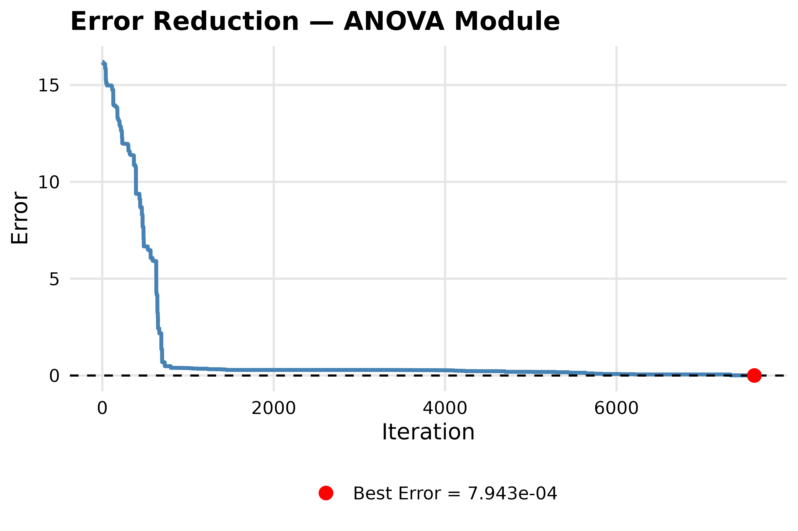
plot_cooling() reconstructs the temperature schedule
from the stored inputs:
plot_cooling(result.aov)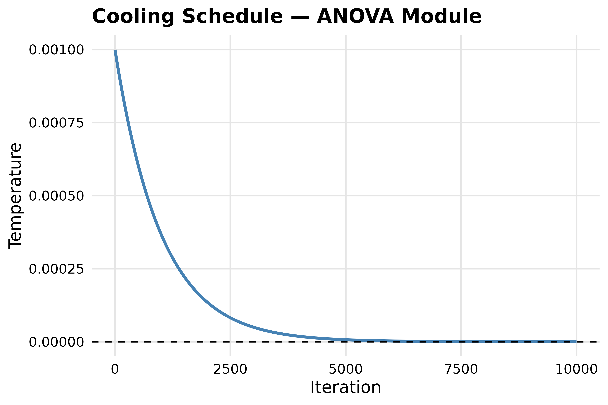
1.5 Target vs. simulated comparison
plot_summary() builds a lollipop chart of simulated
minus target values. With standardised = FALSE (used here
because one target F is 0), the y-axis is on the original
F-scale; with standardised = TRUE (the package default) the
discrepancy is divided by the target value, with a fallback to the
unstandardised difference for near-zero targets.
plot_summary(result.aov, standardised = FALSE)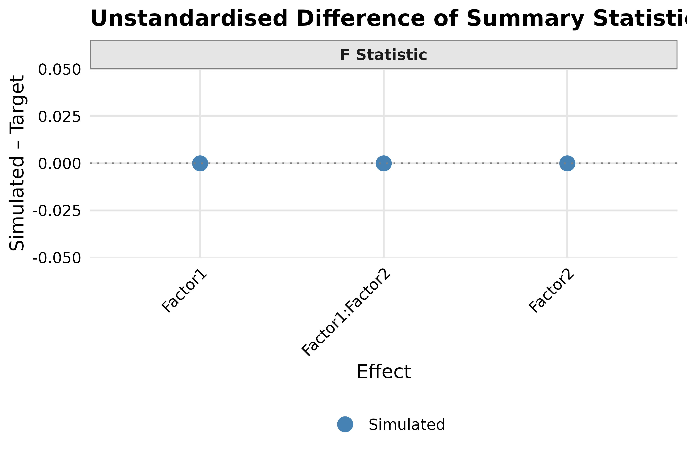
1.6 Inspect the simulated dataset
The simulated dataset is stored at result.aov$data with
columns ID, Factor1, Factor2,
outcome:
data.aov <- result.aov$data
head(data.aov)
#> ID Factor1 Factor2 outcome
#> 1 1 1 1 530.8676
#> 2 1 1 2 450.7417
#> 3 1 2 1 478.9247
#> 4 1 2 2 553.8410
#> 5 2 1 1 562.7350
#> 6 2 1 2 557.6526We can vizualise the outcomes within groups with a density plot:
library(ggplot2)
ggplot(data.aov,
aes(x = outcome,
fill = interaction(Factor1, Factor2, sep = " \u00d7 "))) +
geom_density(alpha = 0.3, color = "gray20") +
scale_fill_grey(start = 0.85, end = 0.25,
name = "Factor1 \u00d7 Factor2") +
labs(x = "Outcome", y = "Density") +
xlim(200,1000) +
theme_minimal(base_size = 13) +
theme(legend.position = "bottom")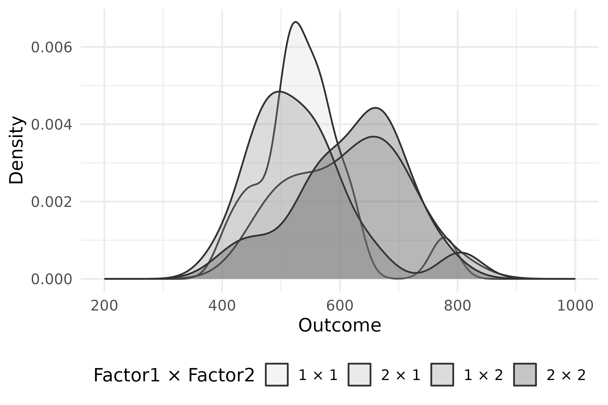
2. Descriptives + MLR module — Bardwell et al. (2007)
Bardwell et al. (2007, https://doi.org/10.1016/j.jad.2006.06.013)
examined whether mood symptoms or apnea severity better predict daytime
fatigue in patients with obstructive sleep apnea. The original raw data
of Bardwell et al. (2003) are not publicly available. The reconstruction
proceeds in three steps: marginal distributions via
optim_vec(), joint regression structure via
optim_mlr(), and a replication assessment via
parallel_optim().
2.1 Step 1 — marginals via optim_vec()
Sanity check with check_grim()
The GRIM test (Brown & Heathers, 2017) verifies whether a reported mean is achievable for the stated sample size and decimal precision. Each integer-valued mean is checked at one decimal place:
check_grim(n = N, target_mean = target_mean["Depression"], decimals = 1)
#> $test
#> [1] TRUE
#>
#> $grim_mean
#> Depression
#> 12.6
check_grim(n = N, target_mean = target_mean["Fatigue"], decimals = 1)
#> $test
#> [1] TRUE
#>
#> $grim_mean
#> Fatigue
#> 10.8Run the optimiser
We set sprite_prec = c(1, 1),thresh = .005,
to set the reported rounding precision. Again, we run the optimization
with default arguments use the defaults (thresh = .005,
max_iter = 5e5,
init_temp = cooling_rate = NULL (set automatically),
max_starts = 3).
Inspect
result.vec
#> stats2data Descriptives result
#> Variables: 4
#> N: 60
#> Best error per variable:
#> Apnea.1: 0.04396
#> Apnea.2: 0.04991
#> Depression: 0.04657
#> Fatigue: 0.04637
summary(result.vec)
#> stats2data Descriptives Summary
#> -----------------------------------------------
#> N: 60 | Variables: 4
#>
#> Best error per variable:
#> Apnea.1: 0.04396
#> Apnea.2: 0.04991
#> Depression: 0.04657
#> Fatigue: 0.04637
#>
#> RMSE
#> Means: 0.03991
#> SDs: 0.04675
#>
#> Target vs. Simulated:
#> variable target_mean sim_mean target_sd sim_sd
#> Apnea.1 48.8 48.75 27.1 27.056
#> Apnea.2 17.3 17.35 20.1 20.050
#> Depression 12.6 12.63 11.3 11.347
#> Fatigue 10.8 10.78 7.3 7.346Diagnostics
plot_error() for a stats2data_vec object
accepts run to select a per-variable trajectory; here the
trajectory for Fatigue (the fourth variable) is shown:
plot_error(result.vec, run = 2)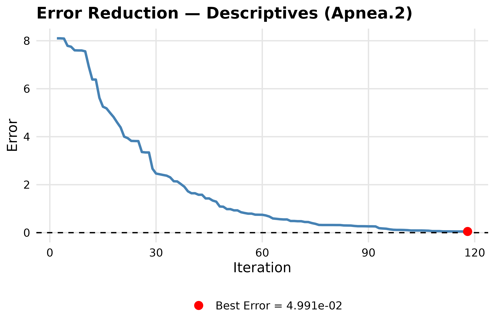
plot_cooling(result.vec)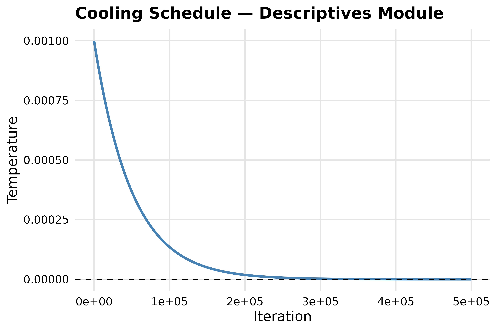
Inspect the simulated dataset
data.vec <- result.vec$data
head(data.vec)
#> Apnea.1 Apnea.2 Depression Fatigue
#> 1 45.71396 1.91228940 4 12
#> 2 57.34349 34.83918618 29 7
#> 3 105.43328 0.07687778 8 4
#> 4 64.91423 37.56782867 30 19
#> 5 67.00977 1.81325274 23 2
#> 6 29.96682 2.28155683 4 14
library(ggplot2)
cont_vars <- c("Apnea.1", "Apnea.2")
int_vars <- c("Depression", "Fatigue")
ggdata.vec <- tidyr::pivot_longer(
data.vec,
cols = c(Apnea.1, Apnea.2, Depression, Fatigue),
names_to = "variable",
values_to = "value"
)
ggdata.vec$variable <- factor(
ggdata.vec$variable,
levels = c(cont_vars, int_vars)
)
ggdata.vec$kind <- ifelse(ggdata.vec$variable %in% int_vars,
"integer", "continuous")
ggplot(ggdata.vec, aes(x = value)) +
geom_density(
data = subset(ggdata.vec, kind == "continuous"),
fill = "gray60", color = "gray20", alpha = 0.5
) +
geom_histogram(
data = subset(ggdata.vec, kind == "integer"),
aes(y = after_stat(density)),
binwidth = 1,
fill = "gray60", color = "gray20"
) +
facet_wrap(~ variable, scales = "free", nrow = 2) +
labs(x = NULL, y = "Density") +
theme_minimal(base_size = 13)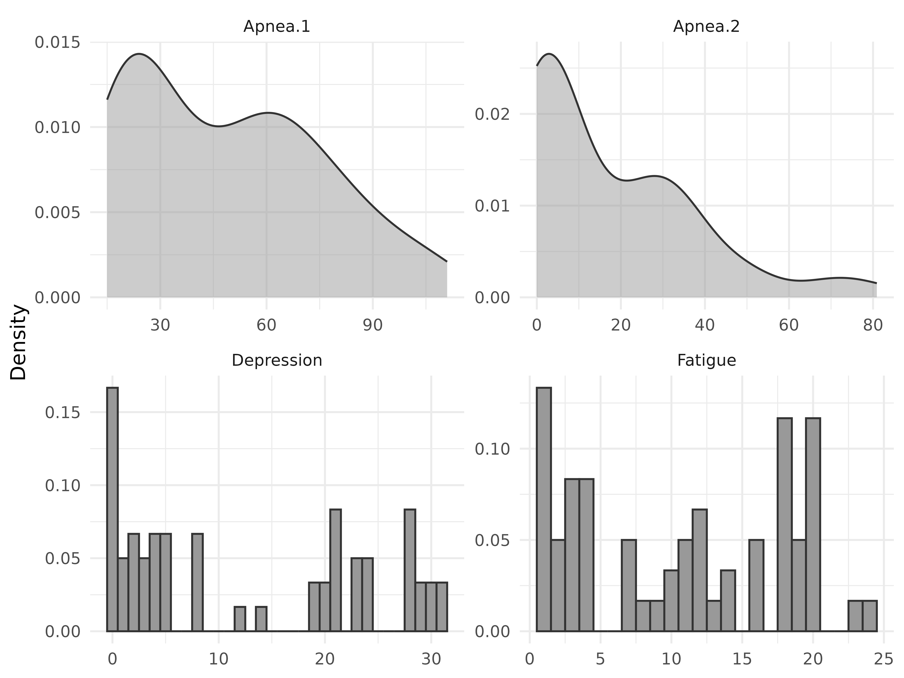
2.2 Step 2 — regression structure via optim_mlr()
Targets
The reported regression coefficients (intercept first), their
standard errors, and the upper-triangular correlation matrix
(column-wise, excluding the diagonal) are encoded as numeric vectors.
NA entries flag unreported values that are excluded from
the objective.
Run the optimiser
For compile-time reasons the local-refinement step is disabled
(hill_climbs = NULL; default 1e4),
max_starts is reduced to 1 (default
3), and max_iter is reduced to
1e4 (default 1e5). All other arguments use the
defaults (weight = 0.5, thresh = 5e-3,
init_temp = NULL for adaptive initialisation,
cooling_rate = NULL).
result.mlr <- optim_mlr(
N = N,
target_mean = target_mean,
target_sd = target_sd,
range = range_matrix,
integer = integer,
reg_equation = reg_equation,
target_cor = target_cor,
target_reg = target_reg,
target_se = target_se,
thresh = .0005,
weight = .05,
)
#>
#> Hill climbing best error: 0.0004525559Inspect
result.mlr
#> stats2data MLR result
#> N: 60
#> Equation: Fatigue ~ Apnea.1 + Apnea.2 + Depression
#> Best error: 0.000452556
summary(result.mlr)
#> stats2data MLR Summary
#> -----------------------------------------------
#> N: 60 | Model: Fatigue ~ Apnea.1 + Apnea.2 + Depression
#> Best error: 0.000452556
#>
#> RMSE
#> Correlations: 0.00139
#> Regression Coefficients: 0.0004172
#> Standard Errors: 0.001254
#>
#> Descriptives (Target vs. Simulated):
#> variable target_mean sim_mean target_sd sim_sd
#> Apnea.1 48.8 48.8 27.1 27.100
#> Apnea.2 17.3 17.3 20.1 20.100
#> Depression 12.6 12.6 11.3 11.296
#> Fatigue 10.8 10.8 7.3 7.302
#>
#> Coefficients (Target vs. Simulated):
#> term target_reg sim_reg target_se sim_se
#> (Intercept) 4.020 4.020067 NA 1.70406
#> Apnea.1 0.023 0.023339 0.034 0.03403
#> Apnea.2 0.008 0.007357 0.048 0.04668
#> Depression 0.438 0.437596 0.066 0.06428
#>
#> Correlations (Target vs. Simulated):
#> pair target_cor sim_cor
#> Apnea.1-Apnea.2 NA 0.63345
#> Apnea.1-Depression NA 0.01334
#> Apnea.1-Fatigue NA 0.18448
#> Apnea.2-Depression 0.11 0.10848
#> Apnea.2-Fatigue 0.20 0.20001
#> Depression-Fatigue 0.68 0.68187get_stats() returns the fitted lm, its
coefficients and standard errors, the upper-triangular correlation
vector, and the column-wise means and SDs:
stats.mlr <- get_stats(result.mlr)
stats.mlr$reg
#> (Intercept) Apnea.1 Apnea.2 Depression
#> 4.020067413 0.023338825 0.007357097 0.437595632
stats.mlr$se
#> (Intercept) Apnea.1 Apnea.2 Depression
#> 1.70405852 0.03403070 0.04667936 0.06427530
stats.mlr$cor
#> [1] 0.63345280 0.01334132 0.18448294 0.10847972 0.20001157 0.68186668coef() is a convenience wrapper that re-fits the
regression and returns the coefficient vector:
coef(result.mlr)
#> (Intercept) Apnea.1 Apnea.2 Depression
#> 4.020067413 0.023338825 0.007357097 0.437595632
get_rmse(result.mlr)
#> $rmse_cor
#> [1] 0.001389951
#>
#> $rmse_reg
#> [1] 0.0004171884
#>
#> $rmse_se
#> [1] 0.001254274Diagnostics
plot_error() shows the total-objective trajectory:
plot_error(result.mlr, first_iter = 1000)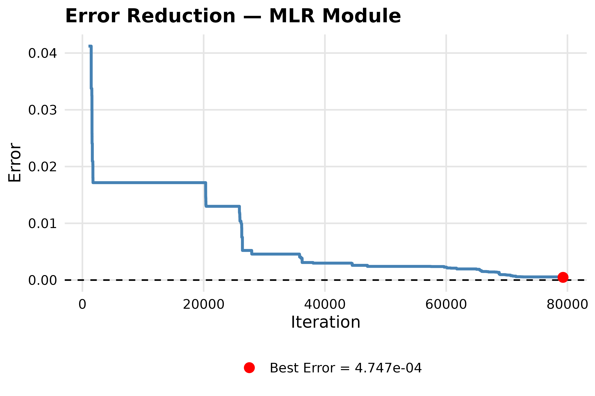
For stats2data_mlr objects, plot_error()
exposes a ratio = TRUE switch that plots the per-iteration
correlation-to-regression error ratio together with mean, median, and
final reference lines:
plot_error(result.mlr, ratio = TRUE)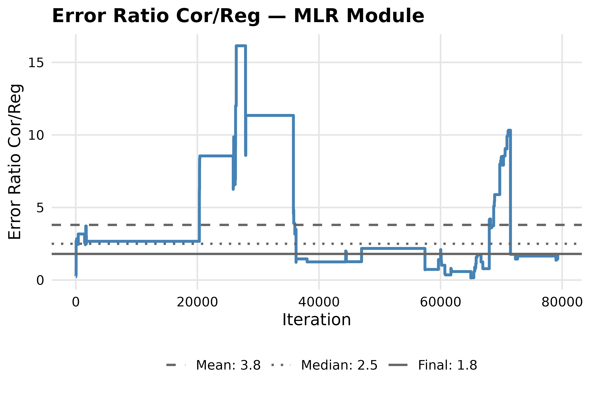
We observe that the regression errors dominate the objective
function, thus, we assign a priori more weight to the regression
component compared to the correlation component by
weight = .05. We run the optimization again, and plot the
errror ratio:
result.mlr <- optim_mlr(
N = N,
target_mean = target_mean,
target_sd = target_sd,
range = range_matrix,
integer = integer,
reg_equation = reg_equation,
target_cor = target_cor,
target_reg = target_reg,
target_se = target_se,
thresh = .0005,
weight = .05,
)
#>
#> Hill climbing best error: 0.0007000829
plot_error(result.mlr, ratio = TRUE)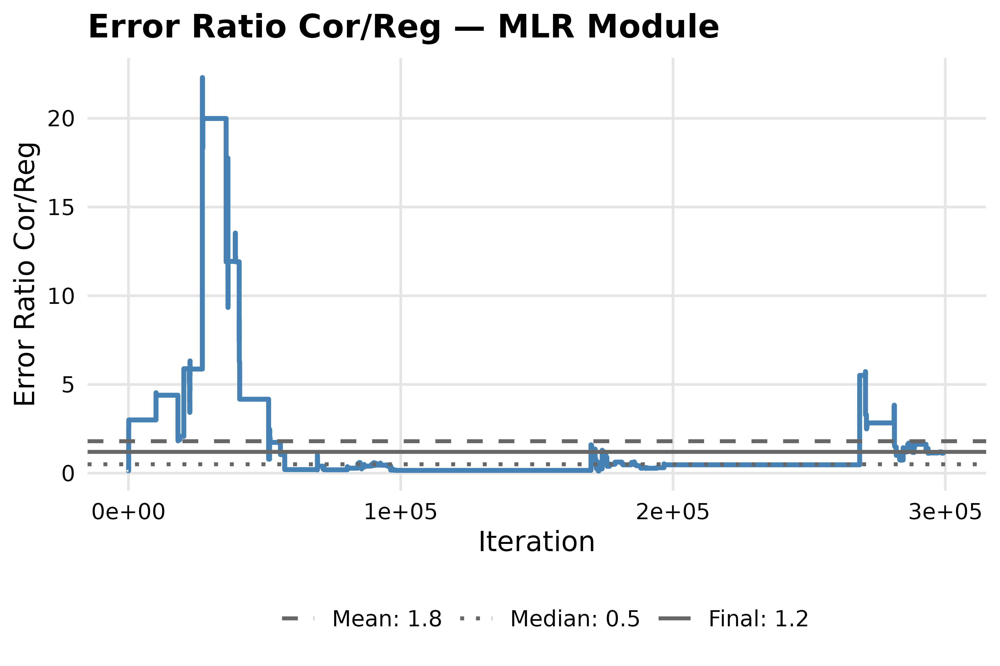
By doing that we see a more balanced contribution of both components, that further lowered the objective value, increasing the match with the target summary statistics.
Inspect the simulated dataset
data.mlr <- result.mlr$data
head(data.mlr)
#> Apnea.1 Apnea.2 Depression Fatigue
#> 1 102.13561 80.899985 5 11
#> 2 111.00000 15.409149 0 11
#> 3 17.48620 13.285775 26 22
#> 4 43.61846 14.551106 25 9
#> 5 48.71794 4.559079 2 4
#> 6 110.99886 9.806297 12 21plot_partial_regression() returns one partial-regression
ggplot per predictor, each annotated with the partial slope and the
residual SD:
partial.plots <- plot_partial_regression(lm(reg_equation, data = data.mlr))
gridExtra::grid.arrange(grobs = partial.plots, ncol = 2)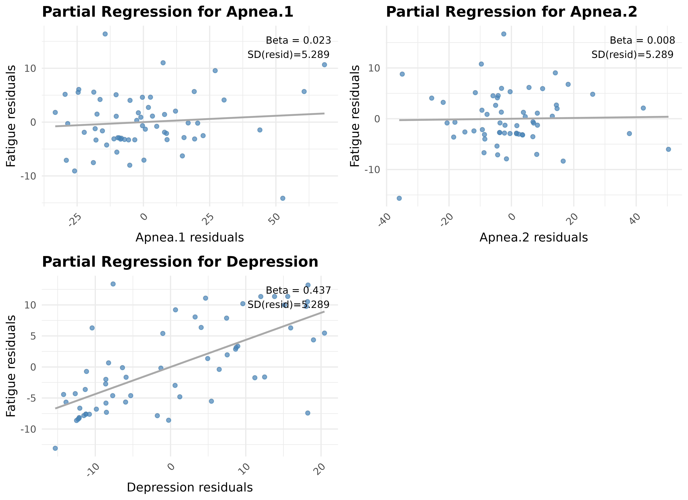
2.3 Step 3 — repeated runs via parallel_optim()
parallel_optim() repeatedly calls any
optim_* function with the same arguments, returns the list
of results, and identifies the single best run by minimum objective
error. runs = 18 parallel replications are used here for
compile-time reasons; setting cores = 6 dispatches the runs
to multiple R sessions via future::multisession.
result.parallel <- parallel_optim(
FUN = optim_mlr,
args = list(
N = N,
target_mean = target_mean,
target_sd = target_sd,
range = range_matrix,
integer = integer,
reg_equation = reg_equation,
target_cor = target_cor,
target_reg = target_reg,
target_se = target_se,
thresh = .0005,
weight = .05
),
runs = 18,
cores = 6,
seed = 2026
)Inspect
result.parallel
#> stats2data parallel result
#> Module: mlr
#> Runs: 18
#> Best error (across runs): 0.000415224
#> Mean error (across runs): 0.000789382
summary(result.parallel)
#> stats2data Parallel Summary
#> -----------------------------------------------
#> Module: mlr | Runs: 18
#> Best error: 0.000415224
#> Mean error: 0.000789382
#> SD error: 0.000461885
#>
#> Target RMSE (across runs):
#> metric mean sd min max
#> rmse_cor 0.0003208 0.0013608 0.000000 0.005774
#> rmse_reg 0.0008222 0.0003897 0.000000 0.001581
#> rmse_se 0.0023207 0.0014962 0.001291 0.006272
#>
#> Between-run RMSE:
#> metric mean sd min max
#> rmse_cor 0.0006059 0.0012096 0.0003208 0.005453
#> rmse_reg 0.0004607 0.0002681 0.0001984 0.001148
#> rmse_se 0.0013657 0.0012490 0.0002245 0.004755
#>
#> Aggregated Statistics:
#> reg:
#> mean median sd min max
#> (Intercept) 4.020084 4.020061 8.459e-05 4.019981 4.020313
#> Apnea.1 0.023565 0.023585 2.718e-04 0.023120 0.024072
#> Apnea.2 0.007025 0.007075 5.654e-04 0.005763 0.007864
#> Depression 0.437174 0.437280 7.050e-04 0.435037 0.438324
#>
#> se:
#> mean median sd min max
#> (Intercept) 1.71512 1.70407 0.0565425 1.67206 1.88694
#> Apnea.1 0.03281 0.03350 0.0019278 0.02778 0.03458
#> Apnea.2 0.04519 0.04598 0.0022708 0.03940 0.04744
#> Depression 0.06458 0.06432 0.0008415 0.06394 0.06703
#>
#> cor:
#> mean median sd min max
#> 1 0.50812 0.61972 0.3083668 -0.361930 0.64704
#> 2 0.01601 0.01245 0.0095859 0.006203 0.04289
#> 3 0.20276 0.18815 0.0403086 0.182778 0.31313
#> 4 0.10816 0.10797 0.0023562 0.103265 0.11467
#> 5 0.20076 0.20065 0.0012290 0.198223 0.20348
#> 6 0.68191 0.68169 0.0009779 0.680850 0.68429
#>
#> mean:
#> mean median sd min max
#> Apnea.1 48.8 48.8 0.0005064 48.8 48.8
#> Apnea.2 17.3 17.3 0.0005068 17.3 17.3
#> Depression 12.6 12.6 0.0000000 12.6 12.6
#> Fatigue 10.8 10.8 0.0000000 10.8 10.8
#>
#> sd:
#> mean median sd min max
#> Apnea.1 27.100 27.100 2.278e-05 27.100 27.100
#> Apnea.2 20.100 20.100 5.340e-05 20.100 20.100
#> Depression 11.299 11.299 2.647e-03 11.296 11.304
#> Fatigue 7.301 7.302 2.668e-03 7.297 7.304get_stats() for a stats2data_parallel
object aggregates each numeric component returned by the per-run
get_stats() method into a data frame with columns
mean, median, sd,
min, max:
get_stats(result.parallel)
#> $reg
#> mean median sd min max
#> (Intercept) 4.020083584 4.020060675 8.459481e-05 4.019980951 4.020313001
#> Apnea.1 0.023565201 0.023584786 2.718081e-04 0.023120081 0.024072143
#> Apnea.2 0.007025486 0.007074841 5.653653e-04 0.005763013 0.007863919
#> Depression 0.437174237 0.437280336 7.050421e-04 0.435037176 0.438324225
#>
#> $se
#> mean median sd min max
#> (Intercept) 1.71511724 1.70406731 0.0565425013 1.67206117 1.88694244
#> Apnea.1 0.03280980 0.03349725 0.0019278317 0.02777571 0.03457576
#> Apnea.2 0.04518583 0.04597569 0.0022707958 0.03939601 0.04744069
#> Depression 0.06457864 0.06431783 0.0008415213 0.06393591 0.06702886
#>
#> $cor
#> mean median sd min max
#> 1 0.50811826 0.61972151 0.3083667502 -0.361930313 0.64704403
#> 2 0.01600687 0.01244507 0.0095859113 0.006202848 0.04288515
#> 3 0.20276484 0.18815391 0.0403085816 0.182778132 0.31313295
#> 4 0.10816459 0.10797489 0.0023562114 0.103264610 0.11466874
#> 5 0.20075739 0.20064786 0.0012290210 0.198222716 0.20348443
#> 6 0.68191260 0.68168566 0.0009779029 0.680850201 0.68428926
#>
#> $mean
#> mean median sd min max
#> Apnea.1 48.79994 48.79951 0.0005064239 48.7995 48.8005
#> Apnea.2 17.29995 17.29951 0.0005068275 17.2995 17.3005
#> Depression 12.60000 12.60000 0.0000000000 12.6000 12.6000
#> Fatigue 10.80000 10.80000 0.0000000000 10.8000 10.8000
#>
#> $sd
#> mean median sd min max
#> Apnea.1 27.099526 27.09952 2.278478e-05 27.099500 27.09959
#> Apnea.2 20.099560 20.09954 5.339974e-05 20.099500 20.09966
#> Depression 11.298934 11.29902 2.647172e-03 11.296017 11.30352
#> Fatigue 7.300697 7.30173 2.667679e-03 7.297086 7.30405get_rmse() returns three components:
between_rmse (per-metric run-to-run RMSE against the
across-run grand mean), target_rmse (per-metric RMSE
against the original targets), and the raw per-run vectors:
get_rmse(result.parallel)
#> $between_rmse
#> metric mean sd min max
#> 1 rmse_cor 0.0006058614 0.0012096246 0.0003207501 0.005452753
#> 2 rmse_reg 0.0004606695 0.0002680838 0.0001983730 0.001147663
#> 3 rmse_se 0.0013656682 0.0012490396 0.0002245251 0.004754573
#>
#> $target_rmse
#> metric mean sd min max
#> 1 rmse_cor 0.0003207501 0.0013608276 0.000000000 0.005773503
#> 2 rmse_reg 0.0008222174 0.0003896646 0.000000000 0.001581139
#> 3 rmse_se 0.0023206979 0.0014962404 0.001290994 0.006271629
#>
#> $raw
#> $raw$between
#> $raw$between$rmse_cor
#> [1] 0.0003207501 0.0003207501 0.0003207501 0.0003207501 0.0003207501
#> [6] 0.0003207501 0.0003207501 0.0054527525 0.0003207501 0.0003207501
#> [11] 0.0003207501 0.0003207501 0.0003207501 0.0003207501 0.0003207501
#> [16] 0.0003207501 0.0003207501 0.0003207501
#>
#> $raw$between$rmse_reg
#> [1] 0.0005631426 0.0001983730 0.0001983730 0.0005631426 0.0007713024
#> [6] 0.0011476627 0.0001983730 0.0005631426 0.0003080705 0.0005631426
#> [11] 0.0007344058 0.0001983730 0.0005631426 0.0005631426 0.0005631426
#> [16] 0.0001983730 0.0001983730 0.0001983730
#>
#> $raw$between$rmse_se
#> [1] 0.0002245251 0.0002245251 0.0002245251 0.0008683981 0.0047545733
#> [6] 0.0043434118 0.0008246461 0.0012961640 0.0012961640 0.0012961640
#> [11] 0.0012961640 0.0012961640 0.0002245251 0.0013244302 0.0012961640
#> [16] 0.0016706742 0.0012961640 0.0008246461
#>
#>
#> $raw$target
#> $raw$target$rmse_cor
#> [1] 0.000000000 0.000000000 0.000000000 0.000000000 0.000000000 0.000000000
#> [7] 0.000000000 0.005773503 0.000000000 0.000000000 0.000000000 0.000000000
#> [13] 0.000000000 0.000000000 0.000000000 0.000000000 0.000000000 0.000000000
#>
#> $raw$target$rmse_reg
#> [1] 0.0005000000 0.0008660254 0.0008660254 0.0012247449 0.0015000000
#> [6] 0.0015811388 0.0008660254 0.0005000000 0.0007071068 0.0005000000
#> [11] 0.0000000000 0.0008660254 0.0005000000 0.0012247449 0.0005000000
#> [16] 0.0008660254 0.0008660254 0.0008660254
#>
#> $raw$target$rmse_se
#> [1] 0.002160247 0.002160247 0.002160247 0.001632993 0.006271629 0.005802298
#> [7] 0.002828427 0.001290994 0.001290994 0.001290994 0.001290994 0.001290994
#> [13] 0.002160247 0.003316625 0.001290994 0.001414214 0.001290994 0.002828427RMSE distribution
The plot() method for stats2data_parallel
displays the between-run RMSE distribution alongside the
deviation-from-target RMSE distribution, faceted by metric:
plot_summary(result.parallel)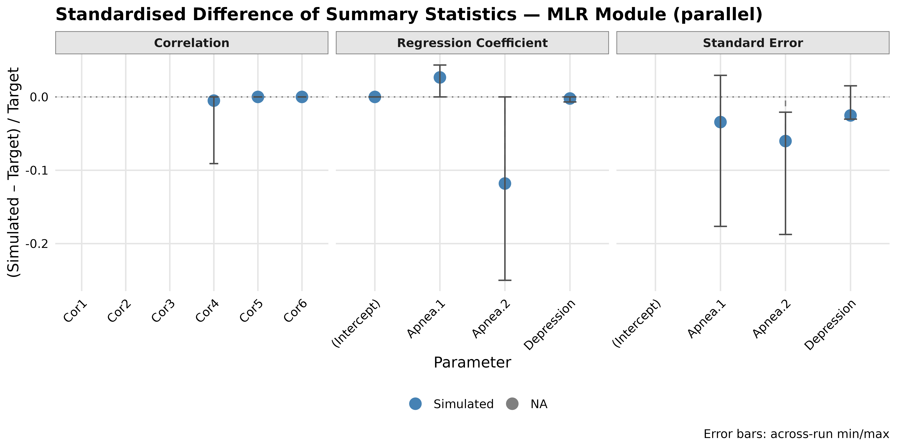
The single best run is accessible via $best and supports
the same S3 methods as a stand-alone result:
result.parallel$best
#> stats2data MLR result
#> N: 60
#> Equation: Fatigue ~ Apnea.1 + Apnea.2 + Depression
#> Best error: 0.000415224
get_rmse(result.parallel$best)
#> $rmse_cor
#> [1] 0.001968488
#>
#> $rmse_reg
#> [1] 0.0003886003
#>
#> $rmse_se
#> [1] 0.001088147References
- Bardwell, W. A., Moore, P., Ancoli-Israel, S., & Dimsdale, J. E. (2003). Fatigue in obstructive sleep apnea: driven by depressive symptoms instead of apnea severity?. The American journal of psychiatry, 160(2), 350–355. https://doi.org/10.1176/appi.ajp.160.2.350
- Bardwell, W. A., Ancoli-Israel, S., & Dimsdale, J. E. (2007). Comparison of the effects of depressive symptoms and apnea severity on fatigue in patients with obstructive sleep apnea: a replication study. Journal of affective disorders, 97(1-3), 181–186. https://doi.org/10.1016/j.jad.2006.06.013
- Brown, N. J. L., & Heathers, J. A. J. (2017). The GRIM Test: A Simple Technique Detects Numerous Anomalies in the Reporting of Results in Psychology. Social Psychological and Personality Science, 8 (4), 363–369. https://doi.org/10.1177/1948550616673876
- Open Science Collaboration. (2015). Estimating the reproducibility of psychological science. Science, 349 (6251), aac4716. https://doi.org/10.1126/science.aac4716
- Reynolds, M., & Besner, D. (2008). Contextual effects on reading aloud: Evidence for pathway control. Journal of Experimental Psychology: Learning, Memory, and Cognition, 34(1), 50–64. https://doi.org/10.1037/0278-7393.34.1.50